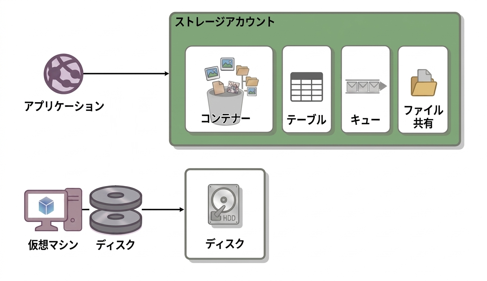
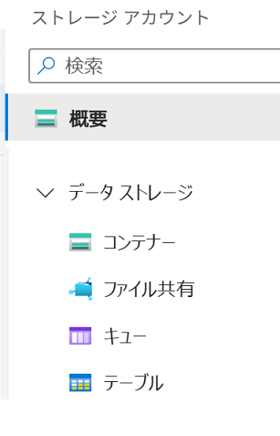
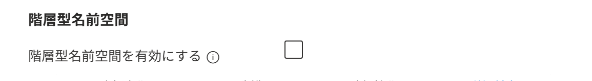
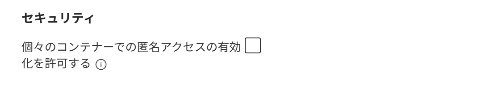
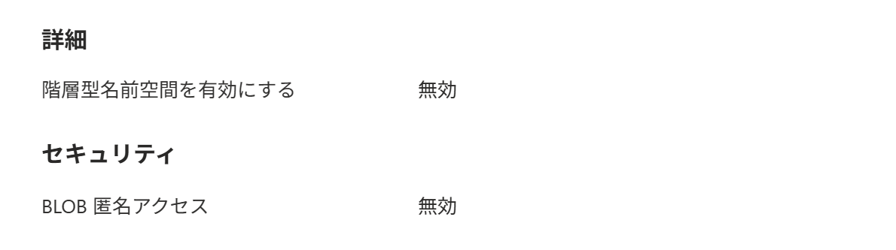

Azure ポータル で ストレージ アカウント を作成する
適用対象: ✔️ ストレージ アカウント
この演習では、Azure ポータル を使用して ストレージ アカウント を作成します。
所要時間: 約 10 分
先行の演習
この演習を始める前に リソースグループを作成する を完了してください。
Azure ストレージ
Azure ストレージは、さまざまなデータを保存するための クラウド ストレージ基盤です。
いくつかのストレージ サービスを、用途に応じて使い分けます。

ストレージ サービス
ストレージ サービス は、Azure ストレージで利用するデータ保存サービスの総称です。
Azure ポータルのメニューから 個々のストレージ サービスを利用できます。

| ポータルでの メニュー | サービス / 拡張機能 | 概要・主な特徴 |
|---|---|---|
| コンテナー | Blob Storage | 画像やログなどを保存する汎用的なオブジェクト ストレージ（フラットな名前空間） |
| テーブル | Table Storage | 非リレーショナルな構造化データ向け NoSQL データストア |
| キュー | Queue Storage | アプリケーション間で非同期メッセージをやり取りするためのキューサービス |
| ファイル共有 | Azure Files | ファイル共有プロトコル(SMB/NFS)に対応したファイルストレージ |
タスク 1: ストレージ アカウント の作成
ストレージ アカウント を作成します。
ストレージ アカウントは、ストレージサービスを利用・管理するための管理単位です。
- 上部の検索ボックスに
ストレージ アカウントと入力します。 - [ストレージ アカウント] を選択します。
- [＋ 作成] を選択します。
- 使用する サブスクリプション を選択します。
- リソース グループで [msaz-rg] を選択します。
- ストレージ アカウント名に
storagev2msaz1と入力します。
ストレージ アカウント名は既に使用されています。 と表示された場合は、任意の別の名前を入力してください。 - 利用可能な リージョン を選択します。
- パフォーマンスで [Standard] を選択します。
- 冗長性で [geo ゾーン冗長ストレージ (GZRS)] を選択します。
- [次へ] を選択します。
- [詳細] タブで、設定項目を一通り確認します。
- 階層型名前空間を有効にする が 無効 であることを確認します。
この設定は、フラットな名前空間 を維持するか、
階層型名前空間 に拡張するか を選択します。
階層型名前空間が 有効 の場合、このストレージ アカウント内のすべてのBLOBが 階層型名前空間で管理されるようになります。
ここでは 通常の BLOB を利用するストレージ アカウントなので、階層型名前空間を 無効 の状態で進めます。
- アクセス層 が [ホット] であることを確認します。
- [詳細] タブ または [セキュリティ] タブで、個々のコンテナーで匿名アクセスの有効化を許可する が 無効 を選択します。
この設定は、各コンテナーで 匿名アクセスを設定できるようにするかどうかを選択します。
ここでは 匿名アクセスを許可しない設定で進めます。
- [レビューと作成] を選択します。
- 設定が反映されていることを確認します。

カテゴリ 設定 値 詳細 階層型名前空間を有効にする 無効セキュリティ BLOB 匿名アクセス 無効 - 内容を一通り確認し、[作成] を選択します。
- 完了を待ちます。
匿名アクセス
匿名アクセスは、サインインや認証なしで BLOB を読める設定です。
匿名アクセスは ストレージアカウント単位で設定します。
| ストレージ アカウント | |
|---|---|
| 名称 | 匿名アクセス （BLOB 匿名アクセス） |
| 役割 | 匿名アクセスを許可するかどうか |
| 対象範囲 | アカウント内の すべてのコンテナー （大元の設定） （コンテナーの設定よりも優先される） |
タスク 2: 作成されたリソースの確認
ストレージ アカウントが作成されていることを確認します。
- 上部の検索ボックスに
ストレージ アカウントと入力します。 - [ストレージ アカウント] を選択します。
storagev2msaz1を選択します。- アカウントの種類 が
StorageV2 (汎用 v2)であることを確認します。